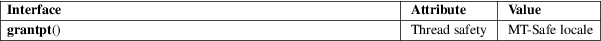

grantpt − grant access to the slave pseudoterminal
Standard C library (libc, −lc)
#include <stdlib.h>
int grantpt(int fd);
Feature Test Macro Requirements for glibc (see feature_test_macros(7)):
grantpt():
Since glibc 2.24:
_XOPEN_SOURCE >= 500
glibc 2.23 and earlier:
_XOPEN_SOURCE
The grantpt() function changes the mode and owner of the slave pseudoterminal device corresponding to the master pseudoterminal referred to by the file descriptor fd. The user ID of the slave is set to the real UID of the calling process. The group ID is set to an unspecified value (e.g., tty). The mode of the slave is set to 0620 (crw−−w−−−−).
The behavior of grantpt() is unspecified if a signal handler is installed to catch SIGCHLD signals.
When successful, grantpt() returns 0. Otherwise, it returns −1 and sets errno to indicate the error.
|
EACCES |
The corresponding slave pseudoterminal could not be accessed. | ||
|
EBADF |
The fd argument is not a valid open file descriptor. | ||
|
EINVAL |
The fd argument is valid but not associated with a master pseudoterminal. |
For an explanation of the terms used in this section, see attributes(7).

Many systems implement this function via a set-user-ID helper binary called "pt_chown". On Linux systems with a devpts filesystem (present since Linux 2.2), the kernel normally sets the correct ownership and permissions for the pseudoterminal slave when the master is opened (posix_openpt(3)), so that nothing must be done by grantpt(). Thus, no such helper binary is required (and indeed it is configured to be absent during the glibc build that is typical on many systems).
POSIX.1-2008.
glibc 2.1. POSIX.1-2001.
This is part of the UNIX 98 pseudoterminal support, see pts(4).
open(2), posix_openpt(3), ptsname(3), unlockpt(3), pts(4), pty(7)